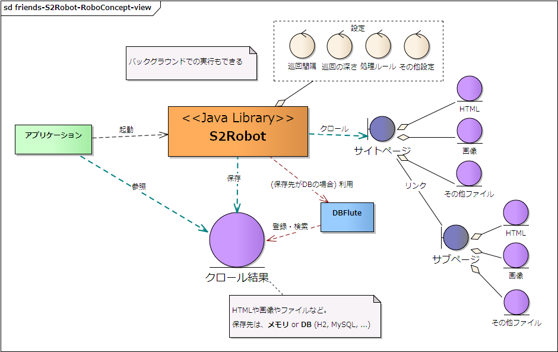
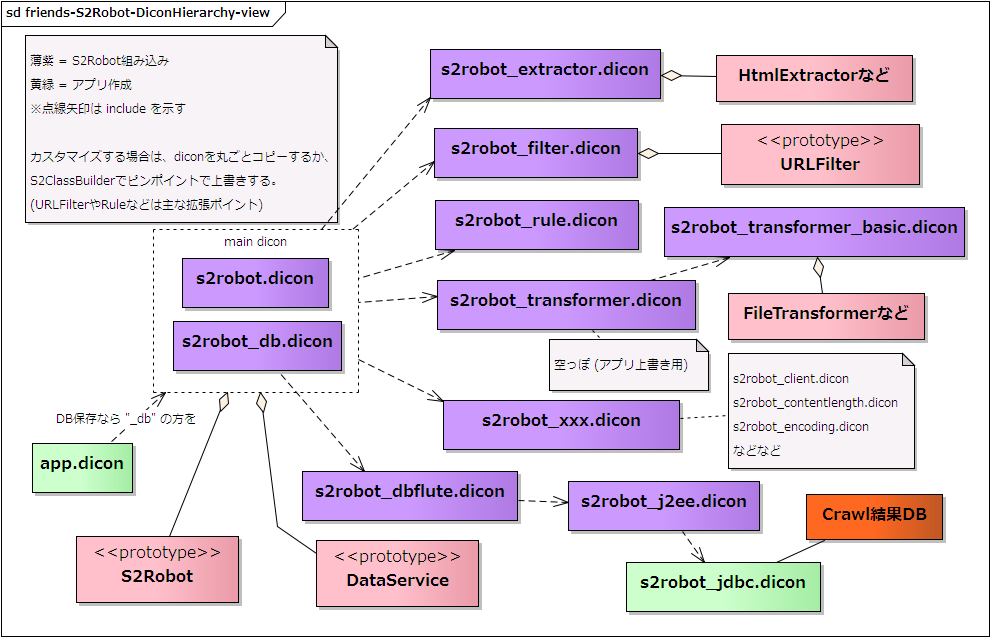

Friends - S2Robot
DBFluteとは直接無関係ながらも、親和性の高いフレームワークを紹介します。
${indexlist}S2Robotとは？
Web およびファイルシステムをクロール可能なクローラフレームワークです。 S2Robot内の一部機能で DBFlute が利用されています。(DIコンテナは Seasar が利用されています)
S2Robotの概念図
図 : S2Robotの概念図 
{kind=link}
クロール結果の保存方法
クロール結果をメモリに保存するか、データベースに保存するかを選択することができます。
- メモリに保存
- 設定が少なく、簡単にS2Robotを利用することができる
- 保存料はメモリ量に依存し、アプリが終了すれば保存結果は消える
- データベースに保存
- 大量の情報を保存することができる
- H2 や MySQL など DBMS を切り替えることができる (デフォルトは H2 Database)
ここでの紹介の前提
ここではクロール結果はデータベースに保存することを前提とし、メモリに保存する方式は割愛します。 また、Maven を使った環境であることを前提とします。
S2Robotの環境構築
詳しくは本家サイトにて。フォロー的な内容だけここでは書いておきます。
S2RobotのDicon構造
図 : S2RobotのDicon構造 
{kind=link}
pom.xml の設定
s2-robot-db と s2-robot-db-[利用するDB (h2 or mysql)] を dependency に定義します。repository として、Seasar の Maven2 Repository の指定が必要です。
e.g. pom.xml に S2Robot のライブラリを定義する (H2 Database 利用) @pom.xml
...
<repositories>
<repository>
<id>maven.seasar.org</id>
<name>The Seasar Foundation Maven2 Repository</name>
<url>http://maven.seasar.org/maven2</url>
</repository>
</repositories>
...
<dependencies>
...
<dependency>
<groupId>org.seasar.robot</groupId>
<artifactId>s2-robot-db</artifactId>
<version>0.4.2</version>
</dependency>
<dependency>
<groupId>org.seasar.robot</groupId>
<artifactId>s2-robot-db-h2</artifactId>
<version>0.4.2</version>
</dependency>
...
</dependencies>
dicon ファイルの設定
app.dicon にて、s2robot_db.dicon を include します。
- app.dicon にて、s2robot_db.dicon を include する
- s2robot_jdbc.dicon を作成して、Crawl結果を保存するDBへの接続設定 (jdbc.dicon のように)
- URLFilter や Rule など拡張したい機能の dicon をコピー作成して独自修正 (*1)
*1: S2Robot のライブラリに組み込まれた dicon の拡張は、プロジェクトの src/main/resources にコピー作成するか、S2ClassBuilder の機能を利用してピンポイントで差し替えるかで実現可能。
S2Robotの使い方
詳しくは本家サイトにて。フォロー的な内容だけここでは書いておきます。
処理ルールの設定
TODO jflute now writing